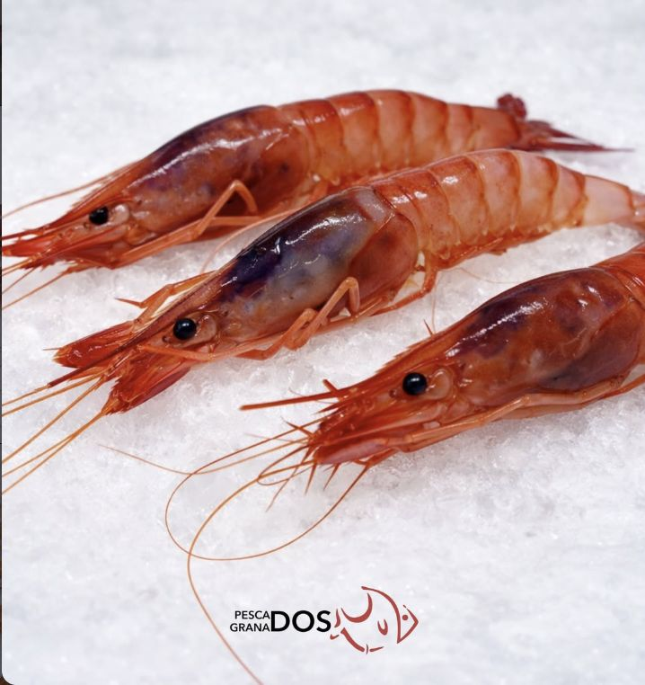
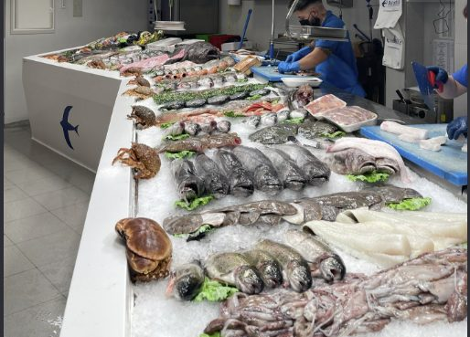

Gamba roja · bandeja de 500 gEl pescado de la lonja de Calpe, limpio y cortado como en el mostrador
Elige la pieza y cómo la quieres. Te la preparamos lista para cocinar y te la llevamos a casa.
Lo que más sale esta semana
Lo mejor de la lonja
Un 10 % menos en tu primer pedido
Usa este código al pagar. Válido en packs y en pieza a pieza.
BIENVENIDAEmpezar a comprarComo si estuvieras en la tienda
Más de 40 años detrás del mostrador. En la web hacemos lo mismo que en la pescadería, solo que te lo llevamos.
- De la lonja de CalpeCada mañana elegimos el género. En la web solo ves lo que tenemos ese día.
- Limpio y a tu gustoEntero, abierto, en filetes o en rodajas. El marisco, crudo o cocido.
- Envasado pieza a piezaEl corte llega intacto, sin agua, en caja con frío.
- A tu puertaEl mismo día en Elche y alrededores; en 24 horas al resto de la Península.
«Nadie se va sin su pescado limpio y listo para cocinar.»
Sección del tema con sus textos e ilustracionesLo pensamos por ti
Las cantidades justas para las personas que elijas, con el pescado limpio y cortado para esa receta. Cada pack sale un 5 % más barato que comprar las piezas por separado.
Shopify Bundles (app gratuita): packs fijos con hasta 3 opciones, como personas y pescado
Pescado y marisco
Precio por pieza o bandeja con su peso aproximado. Al elegir, nos dices cómo te lo preparamos.
Colecciones por familia; el corte es una opción del producto

Foto de ejemplo, no es la tienda de Andrés. En la web real irá una foto de su mostrador.
Como si estuvieras delante del mostrador
Este es el mostrador de hoy. Toca cualquier pescado y te contamos a qué sabe, cómo cocinarlo, un par de recetas y lo que conviene saber.
Filtros por metacampos: Search & Discovery (app gratuita de Shopify)
- Solo lo que hay hoyLo que se acaba se marca solo en la foto.
- Recetas con la compra hechaUn botón y tienes en la cesta el pescado de la receta, ya con su corte.
- Lo que te diría el pescaderoSabor, espinas, trucos y avisos de salud.
Foto con puntos: sección a medida del temaStock por producto: inventario de serie
Qué es Shopify y qué hacemos nosotros
Shopify de serie
Sin pagar nada extra.
- El stock de cada pescado: cuando se acaba, su punto se marca como «Hoy no queda».
- Sabor, grasa, espinas y avisos como campos de cada producto (metacampos).
- Cada receta como ficha propia con su página web (metaobjetos).
- El corte como opción del producto y la cesta.
App gratuita de Shopify
Search & Discovery.
- Los filtros «¿qué te apetece?»: plancha, horno, sin espinas…
- «Combina bien con» al añadir a la cesta.
A medida en el tema (Armiva)
Trabajo de diseño, sin cuota mensual.
- La foto del mostrador con un punto en cada bandeja, y el aviso de agotado encima.
- Que la foto sea ligera: una sola imagen de unos 200 KB, carga al momento.
- El botón «Añadir lo de la receta», que mete varios productos con su corte de una vez.
Lo que pondría Andrés: una foto de su mostrador lleno, de frente, con buena luz (con el móvil vale) y, si quiere, sus recetas. Las fichas de esta demo las hemos escrito nosotros como ejemplo.
Dinos cuánto quieres gastar
Y para cuántos sois. Te proponemos los packs que encajan, del que más aprovecha tu presupuesto al más ajustado.
Página a medida del tema, con los precios de los packs